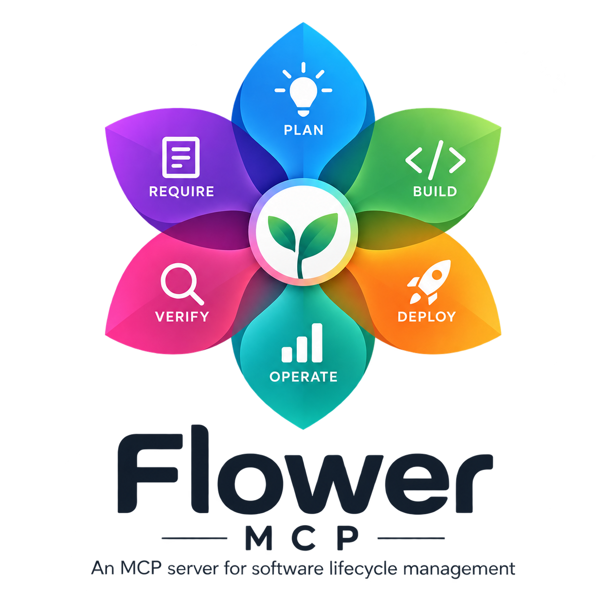

Flower MCP

Scegli la lingua / Choose your language
Lo stesso scenario attraversa i sei petali di Flower: Require, Plan, Build, Verify, Deploy e Operate. Ogni edizione comprende la storia, i concetti, la mappa dei tool pubblici, il confronto tra plane, le integrazioni cross-server, le fonti e la traccia per il talk. Il percorso termina con installazione, download pubblici e primo bootstrap.
The same scenario follows Flower's six petals: Require, Plan, Build, Verify, Deploy and Operate. Each edition includes the story, essential concepts, a public-tool map, a comparison of planes, cross-server integrations, sources and a talk outline. The presentation ends with installation, public downloads and first bootstrap.
Reader offline
Apri index.html oppure direttamente il reader
italiano o inglese. Copia l'intera cartella
presentation per mantenere entrambe le lingue e gli asset condivisi.
Open index.html, or go directly to the
Italian or English reader. Copy the whole
presentation folder to keep both languages and their shared assets.
Nessun server o accesso alla rete è necessario per leggere il percorso. No server or network access is needed to read the presentation.